목표: Transformer MHA, FFN, Encoder/Decoder block 파라미터 계산 문제를 1시간 안에 다시 풀 수 있게 만드는 압축 노트.
| 시간 | 할 일 | 목표 |
|---|---|---|
| 0-10분 | 아래 계산 전 체크리스트와 핵심 공식만
암기 |
문제 조건 확인 |
| 10-25분 | MHA shape 흐름 복습 | \(QK^{\top}\), softmax, head output shape 실수 제거 |
| 25-40분 | 파라미터 공식과 bias/LayerNorm 포함 여부 복습 | weight 수와 parameter 수 구분 |
| 40-55분 | 미니 실전 10문제 풀기 | 계산 속도 확보 |
| 55-60분 | 오답 포인트만 다시 보기 | 마지막 함정 제거 |
| 주제 | 한줄 암기 |
|---|---|
| 입력 차원 정합 | embedding 차원과 \(d_{\mathrm{model}}\)이 다르면 첫 linear projection으로 맞춘다. |
| encoder 출력 차원 | encoder block을 여러 층 지나도 보통 \(T\times d_{\mathrm{model}}\)을 유지한다. |
| 표준 MHA | \(d_k=d_v=\frac{d_{\mathrm{model}}}{h}\)이면 MHA weight는 \(4d_{\mathrm{model}}^2\). |
| 변형 MHA | \(d_k,d_v\)가 따로 주어지면 projection shape으로 직접 센다. |
| ViT | image를 patch sequence로 바꿔 Transformer encoder에 넣는다. |
| ViT position | patch가 원래 이미지의 어느 위치였는지 알려주기 위해 positional embedding을 더한다. |
| CNN vs ViT | CNN은 local convolution bias, ViT는 patch token self-attention 기반이다. |
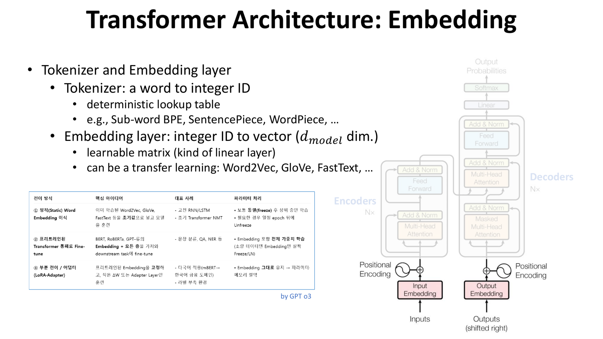
출처: 강의자료 L4.Transformer_part3.pdf, p.7.
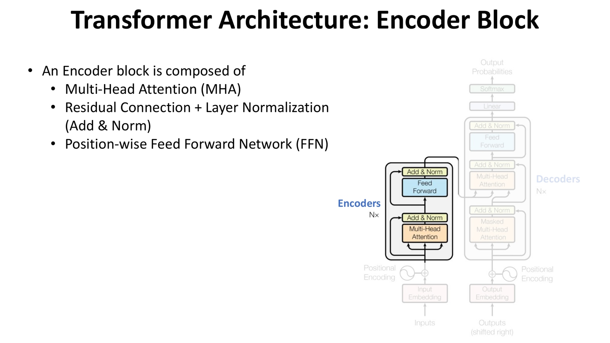
출처: 강의자료 L4.Transformer_part3.pdf, p.8.
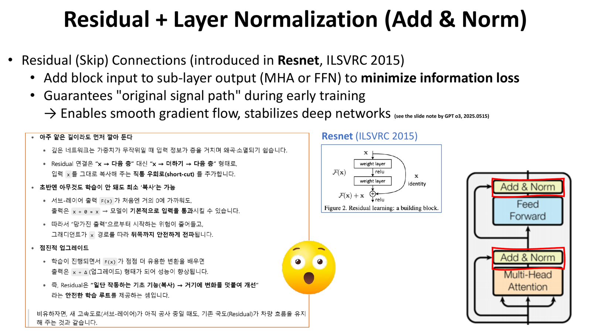
출처: 강의자료 L4.Transformer_part3.pdf, p.9.
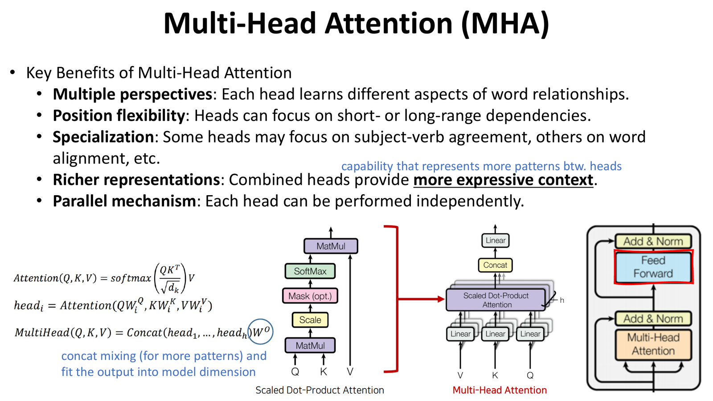
출처: 강의자료 L4.Transformer_part3.pdf, p.13.
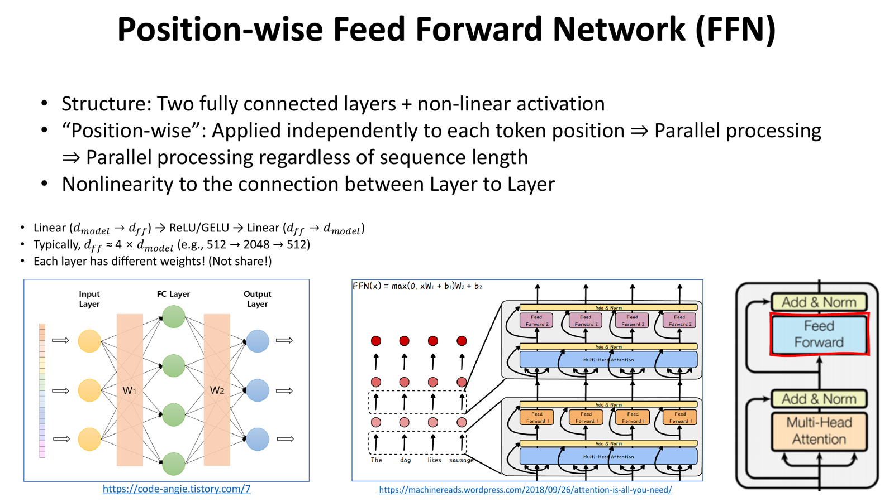
출처: 강의자료 L4.Transformer_part3.pdf, p.12.
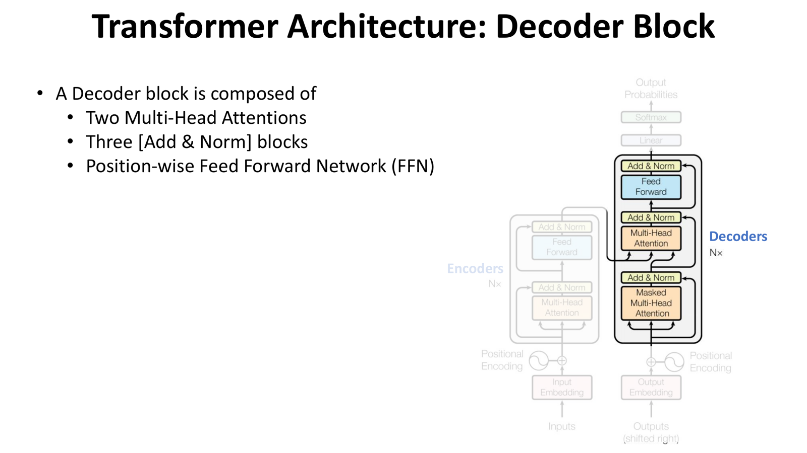
출처: 강의자료 L4.Transformer_part3.pdf, p.18.
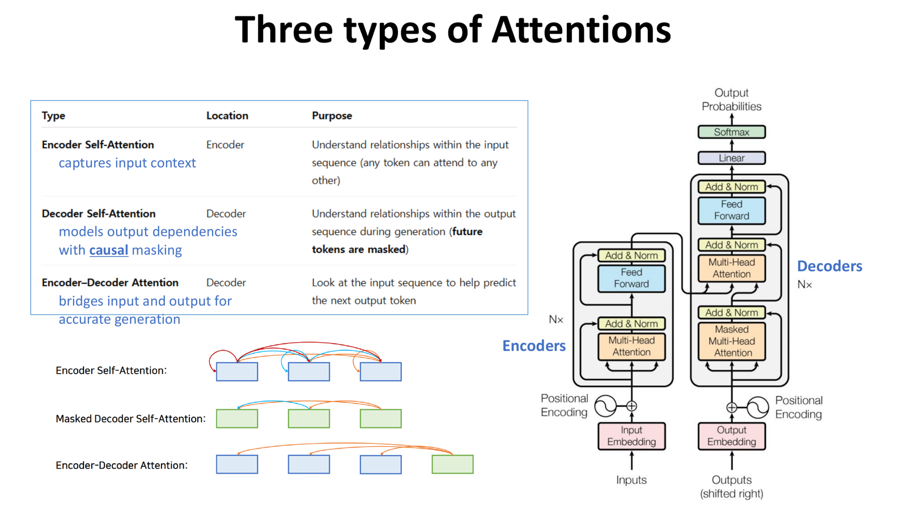
출처: 강의자료 L4.Transformer_part3.pdf, p.19.
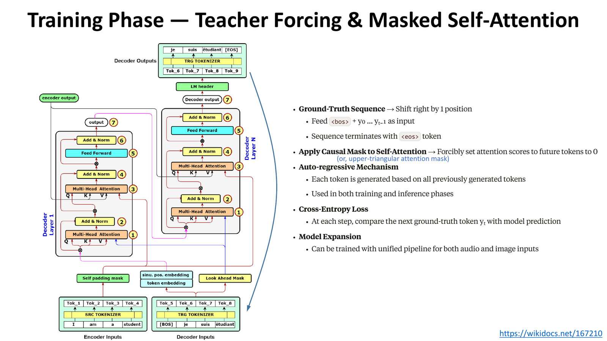
출처: 강의자료 L4.Transformer_part3.pdf, p.21.
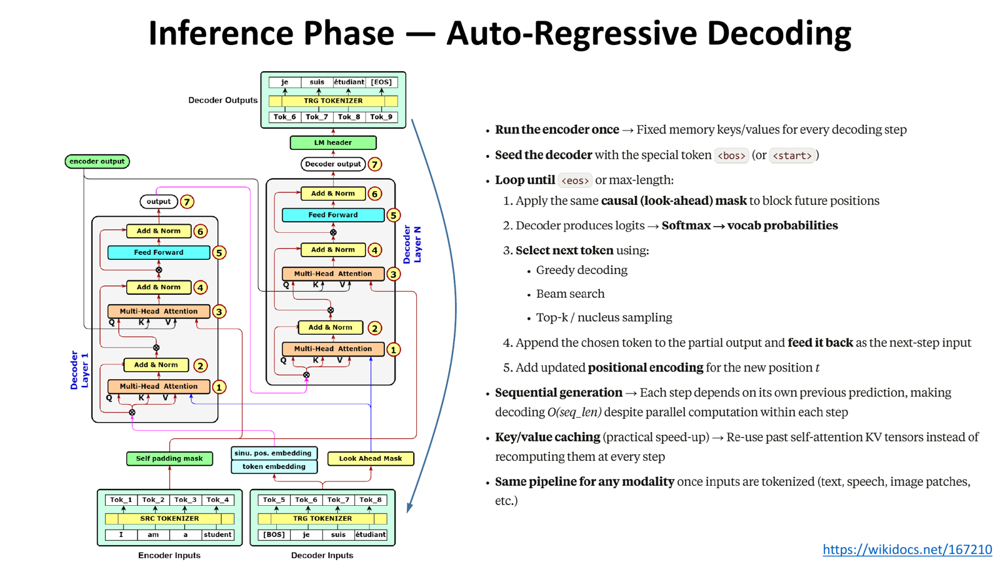
출처: 강의자료 L4.Transformer_part3.pdf, p.22.
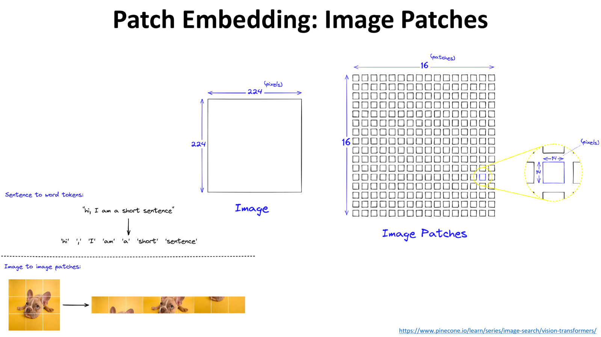
출처: 강의자료 L5.ViT.pdf, p.6.
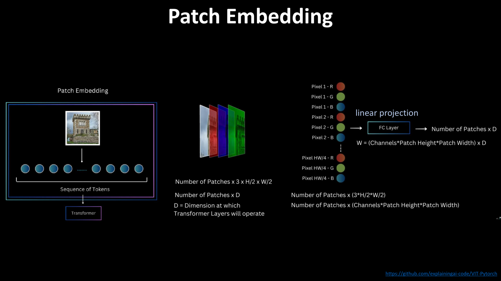
출처: 강의자료 L5.ViT.pdf, p.8.
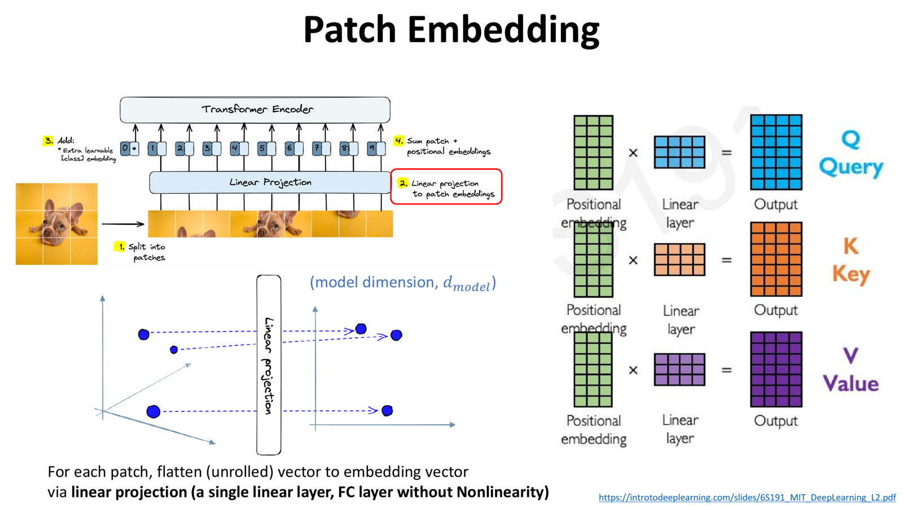
출처: 강의자료 L5.ViT.pdf, p.10.
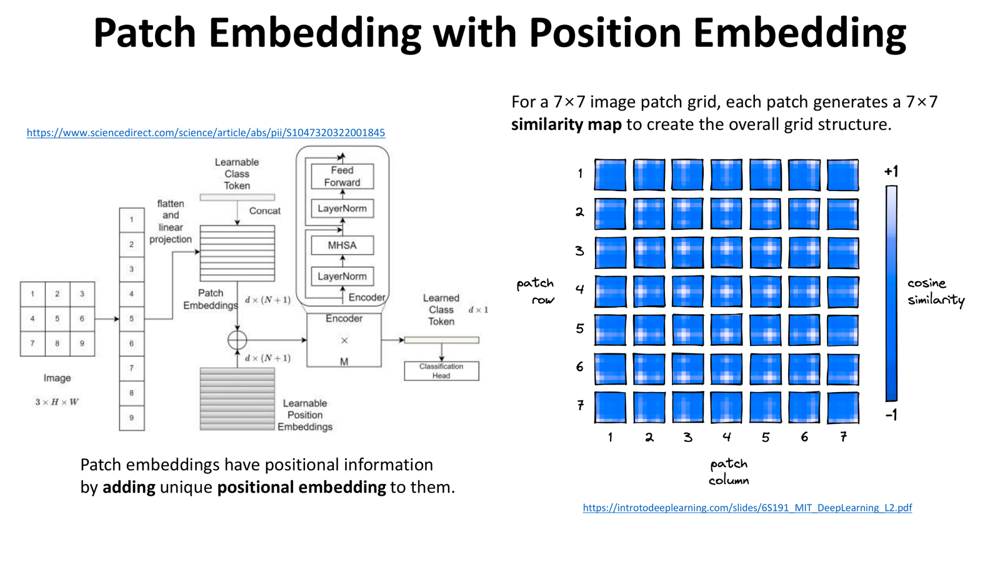
출처: 강의자료 L5.ViT.pdf, p.11.
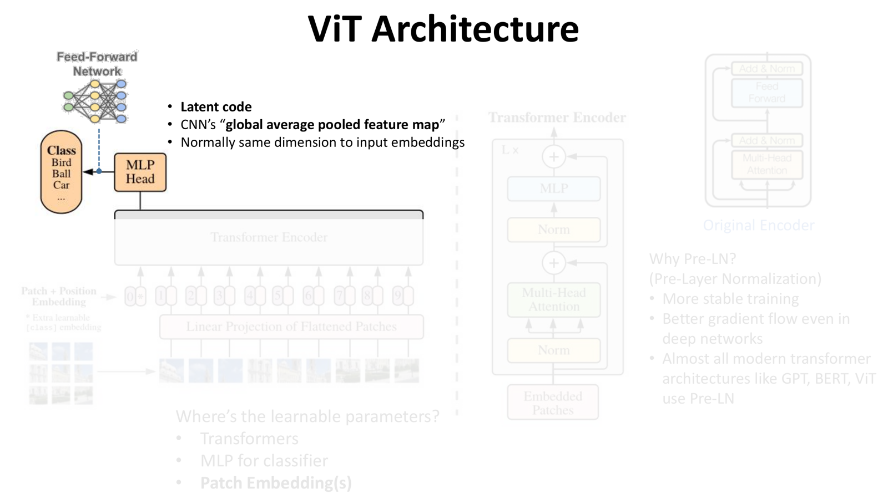
출처: 강의자료 L5.ViT.pdf, p.12.
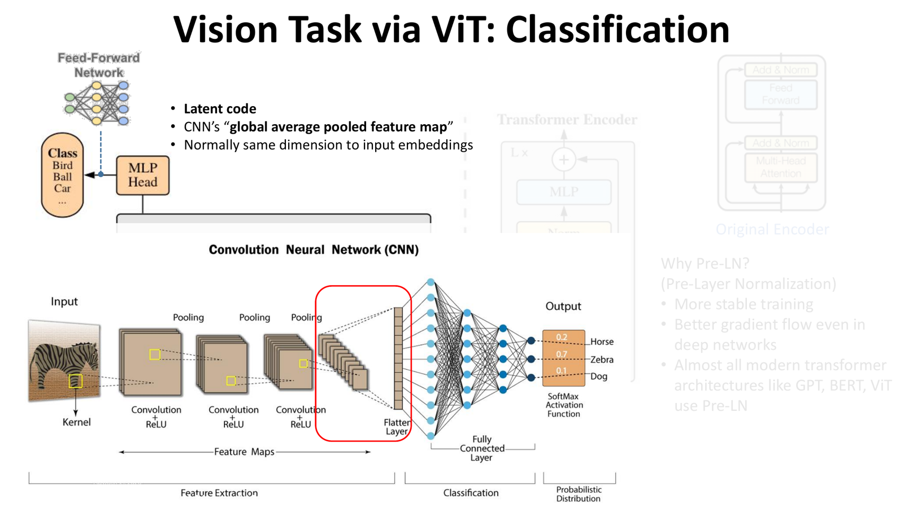
출처: 강의자료 L5.ViT.pdf, p.14.
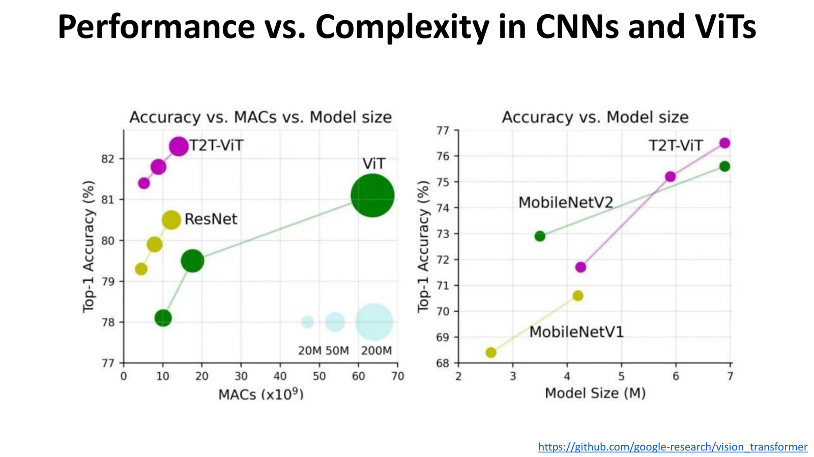
출처: 강의자료 L5.ViT.pdf, p.15.
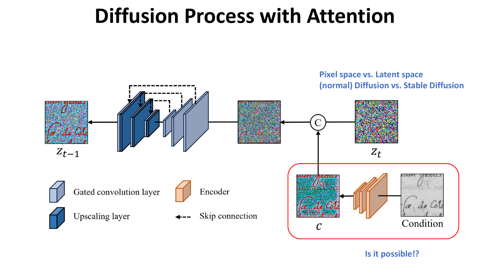
출처: 강의자료 L5.ViT.pdf, p.17.
문제를 읽으면 계산부터 하지 말고 아래를 먼저 표시한다.
weight 수: weight matrix 원소만 센다.parameter 수: 문제에서 포함하라고 한 학습 가능한 값까지
센다.\[ \mathrm{Attention}(Q,K,V)=\mathrm{softmax}\left(\frac{QK^\top}{\sqrt{d_k}}\right)V \]
중요한 점:
입력:
\[ X\in\mathbb{R}^{T\times d_{\mathrm{model}}} \]
표준형:
\[ d_k=d_v=\frac{d_{\mathrm{model}}}{h} \]
한 head에서:
\[ \begin{aligned} W^Q,W^K\in\mathbb{R}^{d_{\mathrm{model}}\times d_k},\quad W^V\in\mathbb{R}^{d_{\mathrm{model}}\times d_v} \end{aligned} \]
\[ \begin{aligned} Q,K\in\mathbb{R}^{T\times d_k},\quad V\in\mathbb{R}^{T\times d_v} \end{aligned} \]
\[ QK^\top=(T\times d_k)(d_k\times T)=T\times T \]
\[ \mathrm{softmax}\left(\frac{QK^\top}{\sqrt{d_k}}\right)\in\mathbb{R}^{T\times T} \]
\[ \text{head output}=(T\times T)(T\times d_v)=T\times d_v \]
head를 \(h\)개 concat하면:
\[ \text{concat}\in\mathbb{R}^{T\times (h d_v)} \]
표준형에서는 \(h d_v=d_{\mathrm{model}}\)이므로:
\[ \begin{aligned} W^O\in\mathbb{R}^{d_{\mathrm{model}}\times d_{\mathrm{model}}},\quad \text{output}\in\mathbb{R}^{T\times d_{\mathrm{model}}} \end{aligned} \]
표준 MHA는 \(Q,K,V,O\) 네 projection weight를 센다.
\[ \#W_{\mathrm{MHA}}=4d_{\mathrm{model}}^2 \]
직접 풀어 쓰면:
\[ Q,K,V: 3d_{\mathrm{model}}^2,\quad O: d_{\mathrm{model}}^2 \]
따라서:
\[ 3d^2+d^2=4d^2 \]
주의:
표준형이 아니고 \(d_k,d_v\)가 따로 주어지면 직접 센다.
한 head:
\[ W^Q,W^K\in\mathbb{R}^{d\times d_k},\qquad W^V\in\mathbb{R}^{d\times d_v} \]
head \(h\)개:
\[ h d(2d_k+d_v) \]
output projection:
\[ \begin{aligned} W^O\in\mathbb{R}^{h d_v\times d} \Rightarrow h d_v d \end{aligned} \]
따라서 전체:
\[ \begin{aligned} \#W_{\mathrm{MHA}}=h d(2d_k+d_v)+h d_v d =h d(2d_k+2d_v) \end{aligned} \]
단, 여기서 \(d=d_{\mathrm{model}}\)이다.
FFN은 보통:
\[ d_{\mathrm{model}}\rightarrow d_{\mathrm{ff}}\rightarrow d_{\mathrm{model}} \]
따라서 bias 제외 weight:
\[ \#W_{\mathrm{FFN}}=d d_{\mathrm{ff}}+d_{\mathrm{ff}}d=2dd_{\mathrm{ff}} \]
Encoder block 하나:
\[ \#W_{\mathrm{Encoder}}=4d^2+2df \]
Decoder block 하나:
\[ \#W_{\mathrm{Decoder}}=8d^2+2df \]
왜 Decoder가 \(8d^2\)인가?
표준 MHA에서 bias를 포함하면 \(Q,K,V,O\) 네 projection bias를 더한다.
\[ \#b_{\mathrm{MHA}}=4d \]
Decoder block은 MHA가 2개라서:
\[ \#b_{\mathrm{MHA,decoder}}=2\times4d=8d \]
FFN은 두 linear layer가 있으므로:
\[ \#b_{\mathrm{FFN}}=d_{\mathrm{ff}}+d \]
LayerNorm 하나는 보통 \(\gamma,\beta\in\mathbb{R}^{d}\)를 가진다.
\[ \#\mathrm{LN}=2d \]
보통 문제에서 주는 기준:
Encoder block, bias 포함, LayerNorm 제외:
\[ 4d^2+2df+4d+(f+d) \]
Encoder block, bias 포함, LayerNorm 2개 포함:
\[ 4d^2+2df+4d+(f+d)+4d \]
Decoder block, bias 포함, LayerNorm 제외:
\[ 8d^2+2df+8d+(f+d) \]
Decoder block, bias 포함, LayerNorm 3개 포함:
\[ 8d^2+2df+8d+(f+d)+6d \]
source length를 \(S\), target length를 \(U\)라고 하자.
Cross-attention에서는:
표준형이면:
\[ d_k=d_v=\frac{d}{h} \]
한 head shape:
\[ Q\in\mathbb{R}^{U\times d_k} \]
\[ \begin{aligned} K\in\mathbb{R}^{S\times d_k},\quad V\in\mathbb{R}^{S\times d_v} \end{aligned} \]
\[ QK^\top=(U\times d_k)(d_k\times S)=U\times S \]
\[ \text{head output}=(U\times S)(S\times d_v)=U\times d_v \]
전체 MHA output:
\[ U\times d_{\mathrm{model}} \]
주의:
weight 수와 parameter 수를 무조건 같다고
보는 실수
조건:
\[ d=8,\quad h=2,\quad f=16 \]
bias와 LayerNorm 제외.
MHA:
\[ 4d^2=4\times8^2=256 \]
FFN:
\[ 2df=2\times8\times16=256 \]
Encoder block:
\[ 256+256=512 \]
조건:
\[ d=8,\quad f=16 \]
Encoder weight:
\[ 4d^2+2df=512 \]
MHA bias:
\[ 4d=32 \]
FFN bias:
\[ f+d=16+8=24 \]
LayerNorm 2개:
\[ 2\times(2d)=2\times16=32 \]
전체:
\[ 512+32+24+32=600 \]
조건:
\[ d=12,\quad f=24 \]
Decoder weight:
\[ 8d^2+2df=8\times12^2+2\times12\times24=1152+576=1728 \]
MHA 2개 bias:
\[ 2\times4d=96 \]
FFN bias:
\[ f+d=24+12=36 \]
LayerNorm 3개:
\[ 3\times(2d)=72 \]
전체:
\[ 1728+96+36+72=1932 \]
조건:
\[ d=20,\quad h=4,\quad d_k=4,\quad d_v=6 \]
표준형이 아니므로 \(d/h\)를 쓰지 않는다.
concat dimension:
\[ hd_v=4\times6=24 \]
한 head의 \(Q,K,V\) weight:
\[ 20\times4+20\times4+20\times6=280 \]
4 heads:
\[ 280\times4=1120 \]
output projection:
\[ \begin{aligned} W^O\in\mathbb{R}^{24\times20} \Rightarrow 480 \end{aligned} \]
전체:
\[ 1120+480=1600 \]
답을 가리고 15분 안에 푼다.
\[ X\in\mathbb{R}^{6\times15},\quad h=3 \]
표준 MHA에서 \(d_k,d_v,Q,K,V\) shape을 구하라.
문제 1 조건에서 \(QK^\top\), \(\frac{QK^\top}{\sqrt{d_k}}\), attention weight, head output, concat, \(W^O\) shape을 구하라.
\[ d=15,\quad h=3 \]
표준 MHA의 bias 제외 weight 수와 bias 포함 parameter 수를 구하라.
\[ d=15,\quad f=45 \]
FFN의 bias 제외 weight 수와 bias 포함 parameter 수를 구하라.
\[ d=15,\quad h=3,\quad f=45 \]
Encoder block 하나의 bias 제외 weight 수를 구하라.
\[ d=15,\quad h=3,\quad f=45 \]
Decoder block 하나의 bias 제외 weight 수를 구하라.
Encoder 2개, Decoder 2개가 있고:
\[ d=15,\quad h=3,\quad f=45 \]
전체 block weight 수를 구하라. embedding/output classifier는 제외한다.
표준 MHA의 bias 제외 weight 수가 \(1600\)이다. \(d_{\mathrm{model}}\)을 구하고, \(h=4\)라면 \(d_k,d_v\)도 구하라.
표준형이 아니다.
\[ d=20,\quad h=4,\quad d_k=4,\quad d_v=6 \]
concat dimension, \(W^O\) shape, MHA weight 수를 구하라.
Cross-attention에서:
\[ S=9,\quad U=4,\quad d=20,\quad h=4 \]
한 head의 \(Q,K,V,QK^\top\), head output shape과 전체 MHA output shape을 쓰라.
\[ d_k=d_v=15/3=5 \]
\[ Q,K,V\in\mathbb{R}^{6\times5} \]
\[ QK^\top\in\mathbb{R}^{6\times6} \]
\[ \frac{QK^\top}{\sqrt{d_k}}\in\mathbb{R}^{6\times6} \]
attention weight:
\[ \mathbb{R}^{6\times6} \]
head output:
\[ (6\times6)(6\times5)=6\times5 \]
concat:
\[ 6\times(3\times5)=6\times15 \]
\[ W^O\in\mathbb{R}^{15\times15} \]
weight:
\[ 4d^2=4\times15^2=900 \]
bias:
\[ 4d=60 \]
bias 포함 parameter:
\[ 900+60=960 \]
weight:
\[ 2df=2\times15\times45=1350 \]
bias:
\[ f+d=45+15=60 \]
bias 포함 parameter:
\[ 1350+60=1410 \]
\[ 4d^2+2df=4\times15^2+2\times15\times45=900+1350=2250 \]
\[ 8d^2+2df=8\times15^2+2\times15\times45=1800+1350=3150 \]
Encoder:
\[ 2250\times2=4500 \]
Decoder:
\[ 3150\times2=6300 \]
전체:
\[ 4500+6300=10800 \]
\[ 4d^2=1600 \]
\[ d^2=400,\quad d=20 \]
\[ d_k=d_v=20/4=5 \]
concat:
\[ hd_v=4\times6=24 \]
\[ W^O\in\mathbb{R}^{24\times20} \]
한 head:
\[ 20\times4+20\times4+20\times6=280 \]
4 heads:
\[ 1120 \]
output projection:
\[ 24\times20=480 \]
전체:
\[ 1120+480=1600 \]
\[ d_k=d_v=20/4=5 \]
\[ Q\in\mathbb{R}^{4\times5} \]
\[ K,V\in\mathbb{R}^{9\times5} \]
\[ QK^\top\in\mathbb{R}^{4\times9} \]
head output:
\[ (4\times9)(9\times5)=4\times5 \]
전체 MHA output:
\[ 4\times20 \]
아래만 종이에 다시 적고 들어간다.
\[ d_k=d_v=\frac{d}{h}\quad \text{only if standard MHA} \]
\[ \#W_{\mathrm{MHA}}=4d^2 \]
\[ \#W_{\mathrm{FFN}}=2df \]
\[ \#W_{\mathrm{Encoder}}=4d^2+2df \]
\[ \#W_{\mathrm{Decoder}}=8d^2+2df \]
\[ b_{\mathrm{MHA}}=4d,\quad b_{\mathrm{FFN}}=f+d,\quad b_{\mathrm{LN}}=2d \]
Cross-attention:
\[ Q:U\times d_k,\quad K:S\times d_k,\quad V:S\times d_v,\quad QK^\top:U\times S \]
가장 중요한 문장:
문제에서 포함하라고 한 것만 세고, 표준형인지 variant인지 먼저 확인한다.
이번 강의의 핵심은 “Transformer 수식은 돌아가려면 차원이 맞아야 하고, image도 patch sequence로 바꾸면 Transformer에 넣을 수 있다”이다.
문제에서 embedding dimension과 \(d_{\mathrm{model}}\)이 다르면 첫 단에서 projection을 넣는다.
예:
\[ \begin{aligned} embedding &= 128\\ d_{\mathrm{model}} &= 512 \end{aligned} \]
이면
\[ Linear(128 \to 512) \]
를 먼저 적용한 뒤 Transformer encoder에 넣는다.
이후 encoder block의 입출력은 보통 계속:
\[ T\times d_{\mathrm{model}} \]
이다.
표준 MHA:
\[ \begin{aligned} d_k &= d_v = d_{\mathrm{model}} / h \end{aligned} \]
그러면 MHA weight 수는:
\[ 4 d_{\mathrm{model}}^2 \]
단, \(d_k\), \(d_v\)를 따로 주면 표준 공식으로 바로 가면 안 된다.
변형 MHA:
\[ \begin{aligned} W_Q: d_{\mathrm{model}}\times d_k\\ W_K: d_{\mathrm{model}}\times d_k\\ W_V: d_{\mathrm{model}}\times d_v\\ W_O: h d_v\times d_{\mathrm{model}} \end{aligned} \]
전체 weight:
\[ h\,d_{\mathrm{model}}(2d_k+2d_v) \]
표준 attention은 Q, K, V와 output projection으로 구성된다.
추가 projection \(Y\), \(U\) 같은 것을 넣는다면 그것은 표준 MHA가 아니라 변형 모델이다. 퀴즈에서는 문제 조건에 “추가 projection을 사용한다”는 말이 있을 때만 따로 센다.
Vision Transformer의 핵심 흐름:
\[ \mathrm{image} \rightarrow \mathrm{patch} \rightarrow \mathrm{flatten} \rightarrow \mathrm{patch\ embedding} \rightarrow \mathrm{positional\ embedding} \rightarrow \mathrm{Transformer\ encoder} \rightarrow \mathrm{classification} \]
이미지는 원래 sequence가 아니지만, patch를 token처럼 만들면 Transformer 입력으로 쓸 수 있다.
Transformer는 CNN처럼 2D 공간 구조를 자동으로 강하게 가정하지 않는다.
그래서 patch token에 위치 정보를 더해야 한다.
한줄 답안:
ViT에서 positional embedding은 patch token이 이미지의 어느 위치에서 왔는지 알려주기 위해 필요하다.
| 구분 | CNN | ViT |
|---|---|---|
| 입력 처리 | convolution window | patch token sequence |
| 기본 가정 | local pattern 강함 | 전역 attention |
| 장점 | 적은 데이터에서도 안정적 | 큰 데이터/compute에서 확장성 |
| 대표 흐름 | LeNet, AlexNet, VGG, ResNet | ViT |
입력 image patch embedding이 192차원이고 Transformer encoder의 \(d_{\mathrm{model}}\)이 768이다. 이 경우 첫 단에서 무엇을 해야 하며, 왜 필요한가?
첫 단에서 \(\mathrm{Linear}(192\to768)\) projection을 적용해 patch embedding을 \(d_{\mathrm{model}}\) 차원으로 맞춘다. Transformer encoder 내부의 MHA, FFN, residual connection, LayerNorm은 보통 \(d_{\mathrm{model}}\) 차원을 기준으로 설계되므로 입력 차원을 맞추지 않으면 block 연산을 일관되게 수행할 수 없다.
이번 강의의 핵심은 “Diffusion은 noise를 조금씩 더하는 forward process를 거꾸로 학습해 denoising으로 이미지를 생성하고, Stable Diffusion 계열은 pixel space가 아니라 latent space에서 이 과정을 수행한다”이다.
출처: 강의자료 L5.ViT.pdf, p.17.
Diffusion model은 두 과정을 구분해서 외운다.
| 구분 | 의미 | 암기 포인트 |
|---|---|---|
| Forward process | 깨끗한 image에 noise를 step별로 추가 | 학습되는 과정이라기보다 정해진 noise schedule을 따른다. |
| Reverse process | noisy image에서 noise를 제거하며 image 복원 | neural network가 denoising 방향을 학습한다. |
Forward process는 열역학적 확산처럼 질서 있는 image가 점점 random noise에 가까워지는 방향이다. 생성은 이 방향을 거꾸로 따라가야 하므로, model은 각 step에서 “현재 noise가 얼마인지” 또는 “제거해야 할 noise가 무엇인지”를 예측하도록 학습된다.
Diffusion 학습에서 중요한 것은 최종 image만 맞추는 것이 아니라 각 timestep에서의 denoising target을 맞추는 것이다.
기본적으로 model은 다음 형태를 학습한다고 보면 된다.
\[ \epsilon_{\theta}(x_t,t) \]
여기서 \(x_t\)는 timestep \(t\)에서 noise가 섞인 sample이고, \(t\)는 현재 noise level을 알려주는 timestep condition이다. \(t\)를 넣지 않으면 model은 지금 입력이 약하게 noisy한 상태인지 거의 완전한 noise인지 구분하기 어렵다.
실전 암기:
DDPM은 diffusion model을 실제 image generation 성능으로 끌어올린 대표적인 구조다.
| 항목 | 암기 |
|---|---|
| 핵심 | step별로 noise를 제거하는 denoising model |
| 단점 | sampling step이 많아 generation이 느리다. |
| 조건 | timestep embedding을 model에 넣어야 한다. |
| backbone | image-to-image denoising 구조라 U-Net 계열을 자주 쓴다. |
DDPM에서는 timestep이 매우 중요하다. 같은 noisy image처럼 보여도 \(t\)가 다르면 제거해야 할 noise level이 다르기 때문이다. 그래서 timestep embedding을 image feature에 더하거나 attention/conditioning 형태로 넣는다.
DDIM은 DDPM의 느린 sampling 문제를 줄이기 위해 sampling step을 줄이는 방향으로 이해하면 된다.
| 구분 | DDPM | DDIM |
|---|---|---|
| 생성 방식 | 많은 step을 순차적으로 denoising | 일부 timestep을 건너뛰며 더 빠르게 sampling |
| 장점 | 안정적 생성 | 빠른 생성 |
| 퀴즈 포인트 | step이 많아 느리다 | skip sampling으로 step 수를 줄인다 |
한 줄 답안:
DDIM은 DDPM처럼 모든 timestep을 촘촘히 거치지 않고 일부 step을 건너뛰어 더 적은 denoising step으로 sampling 속도를 높인다.
일반 diffusion을 pixel space에서 직접 수행하면 image resolution이 커질수록 계산량이 매우 커진다. LDM은 이 문제를 줄이기 위해 image를 VAE encoder로 latent code로 압축한 뒤, latent space에서 diffusion을 수행한다.
흐름:
\[ \mathrm{image}\rightarrow \mathrm{VAE\ encoder}\rightarrow \mathrm{latent}\rightarrow \mathrm{diffusion}\rightarrow \mathrm{VAE\ decoder}\rightarrow \mathrm{image} \]
핵심 비교:
| 구분 | Pixel-space diffusion | Latent diffusion |
|---|---|---|
| denoising 위치 | image pixel 공간 | VAE latent 공간 |
| 계산량 | 큼 | 상대적으로 작음 |
| 대표 모델 | 초기 diffusion 계열 | Stable Diffusion 계열 |
| 장점 | 직접 image를 다룸 | 고해상도 생성 비용 감소 |
Stable Diffusion에서 VAE는 image를 압축하고 복원하는 역할을 한다. Diffusion model은 압축된 latent에서 denoising을 수행하므로 pixel 전체를 직접 다루는 것보다 효율적이다.
Text-to-image generation을 하려면 text prompt와 image feature가 같은 의미 공간에서 연결되어야 한다. CLIP은 image encoder와 text encoder를 함께 학습해 text와 image embedding이 서로 맞도록 만든다.
CLIP 학습 직관:
Text-conditioned diffusion에서는 text embedding이 denoising network에 condition으로 들어간다. Cross-attention 관점에서는 image feature 쪽 query와 text condition 쪽 key/value를 연결하는 구조로 이해하면 된다.
DDPM, DDIM, LDM을 sampling 속도와 계산 공간 관점에서 비교하라.
DDPM은 pixel 또는 feature 공간에서 많은 timestep을 순차적으로 denoising하므로 생성 품질은 안정적이지만 sampling이 느리다. DDIM은 모든 timestep을 촘촘히 거치지 않고 일부 step을 건너뛰는 방식으로 sampling step 수를 줄여 더 빠르게 생성한다. LDM은 denoising 자체를 pixel space가 아니라 VAE가 만든 latent space에서 수행하므로 고해상도 image를 직접 다루는 것보다 계산량이 줄어든다. 따라서 DDIM은 timestep 수를 줄여 속도를 높이고, LDM은 계산 공간을 줄여 효율을 높인다고 정리할 수 있다.
이번 강의에서 퀴즈 핵심은 “Stable Diffusion 구조를 보고 VAE, CLIP/text encoder, U-Net, timestep, condition, CFG가 각각 어디에 들어가는지 설명할 수 있는가”이다.
| 구분 | Classifier guidance | Classifier-free guidance |
|---|---|---|
| 필요한 모델 | diffusion model + 별도 classifier | condition 있는 diffusion model 하나 |
| guidance 방식 | classifier gradient로 원하는 class 방향을 더함 | unconditional prediction과 conditional prediction을 섞음 |
| 단점/주의 | classifier를 따로 학습해야 함 | null condition까지 같이 학습해야 함 |
| 퀴즈 한줄 | “classifier가 guidance를 줌” | “classifier 없이 condition/null을 섞음” |
Classifier-free guidance는 학습 때 condition을 넣은 경우와 condition을 비운 경우를 같이 경험하게 만든다. Sampling 때는 같은 \(x_t,t\)에 대해 unconditional 예측과 conditional 예측을 모두 얻고, 둘의 차이를 prompt 방향으로 더 밀어준다.
대표 형태:
\[ \hat{\epsilon} =\epsilon_{\theta}(x_t,\varnothing,t) +s\left(\epsilon_{\theta}(x_t,c,t)-\epsilon_{\theta}(x_t,\varnothing,t)\right) \]
여기서 \(c\)는 text/class condition, \(\varnothing\)는 null condition, \(s\)는 guidance scale이다.
| Guidance scale | 생성 경향 |
|---|---|
| 너무 낮음 | prompt 영향이 약하고 unconditional/random 생성에 가까움 |
| 적당함 | prompt 의미와 image 다양성의 균형 |
| 너무 높음 | prompt를 과하게 따라가며 부자연스럽거나 다양성이 줄어듦 |
한 줄 답안:
CFG scale은 prompt 조건을 얼마나 강하게 반영할지 정하는 값이며, 너무 크면 조건은 강해지지만 자연스러움과 다양성이 떨어질 수 있다.
CLIP은 image encoder와 text encoder를 contrastive learning으로 맞춘다.
Text-to-image diffusion에서는 CLIP/text encoder의 text embedding이 denoising U-Net의 condition으로 들어간다. Stable Diffusion 구조에서는 보통 cross-attention을 통해 image latent feature와 text embedding이 연결된다.
Stable Diffusion은 pixel에서 직접 diffusion을 하지 않고 VAE latent에서 diffusion을 수행한다.
흐름:
\[ \mathrm{Prompt}\rightarrow \mathrm{Text\ encoder}\rightarrow \mathrm{text\ embedding} \]
\[ \mathrm{Image}\rightarrow \mathrm{VAE\ encoder}\rightarrow z \]
\[ z_t,\ t,\ \mathrm{text\ embedding} \rightarrow \mathrm{U\text{-}Net} \rightarrow \hat{\epsilon} \]
\[ z_0\rightarrow \mathrm{VAE\ decoder}\rightarrow \mathrm{Image} \]
외울 역할:
| 구성 | 역할 |
|---|---|
| VAE encoder | image를 latent map으로 압축 |
| VAE decoder | denoising된 latent를 image로 복원 |
| Text encoder/CLIP | prompt를 embedding으로 변환 |
| U-Net | latent \(z_t\), timestep, text condition을 보고 noise를 예측 |
| Cross-attention | image latent feature가 prompt 의미를 보도록 연결 |
| CFG | null/condition 예측을 섞어 prompt 반영 강도를 조절 |
예시 암기:
DiT는 diffusion process 자체를 새로 만든 것이 아니라 denoising backbone에 Transformer block을 쓰는 방향이다.
한 줄 답안:
DiT는 U-Net 중심의 denoising network를 Transformer 계열 block으로 바꾸거나 강화한 diffusion model 구조로 이해한다.
LoRA는 거대한 U-Net 전체를 처음부터 다시 학습하지 않고, 기존 weight는 유지한 채 작은 low-rank adapter만 학습해 특정 style이나 domain에 맞추는 방법이다.
한 줄 답안:
특정 style을 만들기 위해 전체 diffusion model을 새로 학습하는 대신 LoRA 같은 lightweight fine-tuning으로 작은 추가 weight만 학습할 수 있다.